SYSTEMIC IC VASCULITIS IN PATHOGENESIS OF RHEUMATOLOGICAL DISEASES
The entire branch of Internal Medicine – Rheumatology – in fact, deals, mostly, with the results of autoimmune IC process. The group of autoallergic connective tissue disorders with non-organospecific autoantibodies (previously misnamed as “collagen vascular diseases”) is a core of Rheumatology. All these diseases, as well as rheumatic fever, which do not belong to above mentioned group, have multisystem IC mediated process as very essential common pathogenic link.
Because of pathogenetic similarity, their clinical manifestations are very close and overlapping. IC vasculitis is responsible for many symptoms of all these illnesses. Although these disorders are autoimmune, they are basically discussed in this section of our book, due to exclusive role of IC mediated tissue damage in their mechanisms.
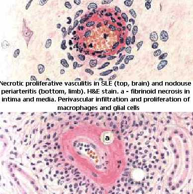
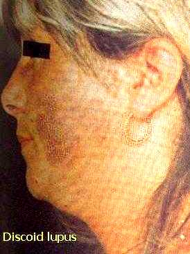
Systemic lupus erythematosus (SLE) – an autoimmune multisystem relapsing disease, involving connective tissue of inner organs and skin. The main pathogenetic process in involved tissues in SLE is IC mediated vasculitis. Virtually all organs may be, principally, involved. If the process is delimited with connective tissue of dermis, the disease is called discoid lupus. Typically SLE affects skin, kidneys, serosal membranes, joints, heart, blood and CNS.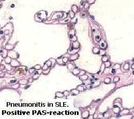
Besides, gut, spleen, liver and lymph nodes quite frequently are also involved. Affection of eyes, lungs and peripheral nerves is less typical, but possible. SLE is not rare (with incidence up to 1/2500 for some populations).
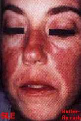 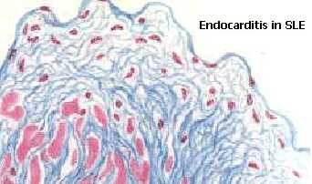
Most characteristic clinical criteria of SLE, according 1982 revised Tan’s classification, are: butterfly rash, photosensitivity, oral ulcers, arthritis, polyserositis, glomerulonephritis (proceeding with persistent proteinuria and casts in urine), CNS manifestations in the form of seizure or even psychosis, hemolytic anemia and pancytopenia (owing to phagocytosis of cells, affected by autoimmune process and their nuclei). The last process is responsible for so called LE phenomenon: phagocytic leukocytes of a patient engulf in vitro nuclei of immunologically opsonized or damaged blood cells, forming LE cells, which present in 70% of cases. Liebman-Sachs’ warty endocarditis is somewhat less characteristic.
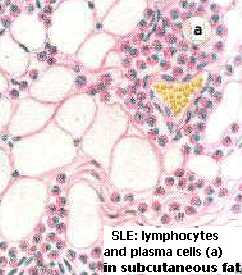
Kidney involvement in SLE is so characteristic and dangerous, that it needs more detailed discussion.
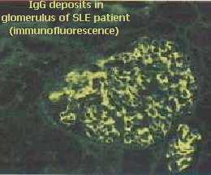
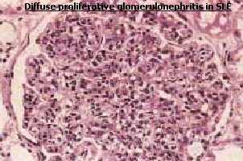
On light microscopic examination, the kidney appears to be involved in 60 to 70% of cases, but if immunofluorescence and electron microscopy are included in the examination of biopsy material, almost all cases of SLE will show some renal abnormality. According to the World Health Organization (WHO) morphologic classification of lupus nephritis, five patterns are recognized:
- normal by light, electron, and immunofluorescent microscopy (class I), which is quite rare;
- mesangial lupus glomerulonephritis (class II),
- focal proliferative glomerulonephritis (class III);
- diffuse proliferative glomerulonephritis (class IV)
- Membranous glomerulonephritis (class V).
It should be noted, however, that none of these patterns is specific for lupus.
MESANGIAL LUPUS GLOMERULONEPHRITIS is the mildest of the lesions and is seen in those patients who have minimal clinical manifestations, such as mild hematuria or proteinuria. It occurs in approximately 10% of the patients. There is a
slight-to-moderate increase in the intercapillary mesangial matrix as well as in the number of mesangial cells. Despite the very mild histological changes, granular mesangial deposits of immunoglobulin and complement are always present. Such deposits presumably reflect the earliest change, because filtered immune complexes accumulate primarily in the mesangium. The other changes to be described are usually superimposed on the mesangial changes.
FOCAL PROLIFERATIVE GLOMERULONEPHRITIS is seen in about one third of initial biopsies of these patients. As the name implies, this is a focal lesion, affecting usually fewer than 50% of the glomeruli and generally only portions of each glomerulus. Typically, one or two tufts in an otherwise normal glomerulus exhibit swelling and proliferation of endothelial and mesangial cells, infiltration with neutrophils, and sometimes - fibrinoid deposits and intracapillary thrombi. Hematoxylin bodies may be present, and fragmentation and breakdown of nuclei produce an appearance described as "nuclear dust". Focal lesions may be associated with relatively mild clinical manifestations: recurrent hematuria and moderate proteinuria with only occasional mild renal insufficiency. However, some patients with focal lesions may have more severe clinical disease progressing to renal failure.
DIFFUSE PROLIFERATIVE GLOMERULONEPHRITIS is the most serious of the renal lesions may have more severe clinical disease progressing to renal failure.
DIFFUSE PROLIFERATIVE GLOMERULONEPHRITIS is the most serious of the renal lesions in SLE, occurring in 45 to 50% of patients who are biopsied. Anatomic changes are dominated by proliferation of endothelia, mesangial, and sometimes-epithelial cells. Most or all are involved in both kidneys, and the entire glomerulus is almost always affected. Patients with diffuse lesions are usually overtly symptomatic, showing microscopic or gross hematuria, proteinuria (including the nephrotic syndrome), hypertension, and frequently a diminution of glomerular filtration rate.
MEMBRANOUS GLOMERULONEPHRITIS occurs in 10% of patients and is a designation given to glomerular disease in which the principal histologic change consists of widespread thickening of the capillary walls. The lesions are very similar to those encountered in idiopathic membranous glomerulonephritis. Patients with this histologic change almost always have severe proteinuria or the overt nephrotic syndrome.
All four types are thought to have the same general pathogenetic mechanism, that is, the deposition of DNA-anti-DNA complexes within the glomeruli. Thus, deposits of immunoglobulin and complement are regularly present in the mesangium, either alone or along the entire basement membrane, and sometimes massively throughout the entire glomerulus. Why this same pathogenetic mechanism produces such different patients is not entirely clear. One of possible reasons is combination of background IC process with different supplements of either cytotoxic, or delayed type, or both mechanisms of tissue damage. Another important milieu is related to the different physical, chemical and biological properties of deposited IC in various cases of SLE.
Electron microscopy demonstrates electron-dense immune complexes in three locations within the glomerulus:
- all histologic types show large amounts of deposits in the mesangium;
- in membranous glomerulonephritis (class V), the deposits are predominantly between the basement membrane and the visceral epithelial cell (subepithelial), a location similar to that of deposits in other types of membranous nephropathy;
- subendothelial deposits (between the endothelium and the basement membrane) are particularly characteristic of SLE, because they are noted in few other types of glomerulonephritis. When extensive, subendothelial deposits create a peculiar thickening of the capillary wall, which can be seen means of light microscopy as a "wire loop" lesion. Such "wire loops" are often found the diffuse proliferative type of glomerulonephritis (class III) but can also be present in the focal (class III) and membranous types (class V). They usually reflect active disease and generally indicate a poor prognosis.
Although the specific types of lesions may persist in individual patients throughout the course of the disease, cases of mesangial or focal glomerulonephritis can progress to diffuse proliferative glomerulonephritis, with a more serious clinical course.
In addition to these glomerular lesions, vasculitis similar to that seen in other affected tissues and organs is sometimes found in cortical arterioles.
Changes in the interstitium and tubules are also frequently present in patients with SLE, especially in association with diffuse proliferative glomerulonephritis. In a few cases, tubulo-interstitial lesions may be the dominant abnormality. The granular deposits composed of immunoglobulin and complement similar to those seen in glomeruli are present in the tubular basement membranes in about 50% of patients with SLE, a pattern indicative of so-called tubular immune complex disease.
Immunological disorder in SLE is characterized by high titers of various anti-nuclear autoantibodies (in 95% of cases). Nuclear antigens are constantly revealed in deposited IC of SLE patients. Most particular among anti-nuclear autoantibodies are the following:
- Autoantibodies towards untreated double-stranded DNA (up to 70% of cases, distinctive from other autoimmune rheumatological diseases, when they occur in less than 5% of cases). In immunofluorescent test they give usually peripheral rim nuclear pattern of staining.
- Another relatively specific feature of autoallergy in SLE is the presence of autoantibodies against an extractable Smith’s ribonucleoprotein – anti-Sm (up to 30%, with less than 5% of positive cases for other diseases of this group). Anti-Sm and another frequent, but less specific for SLE, anti-SS-A and anti-SS-B antiribonucleoproteins, give distinct speckled pattern of nuclear staining in Coons’-Kaplan’s test.
- Autoantibodies against complex of native histones, although not specific for SLE, in general, present regularly (up to 70% of cases) in drug-induced SLE and drug-induced discoid lupus.
Besides anti-nuclear autoantibodies, SLE patients express some other autoreactive Ig:
- Anti-phospholipid autoantibodies revealed in 50% of cases. They hit anionic phospholipids, most frequently – cardiolipin. As phospholipids are of some significance for blood clotting, these Ig may be partially responsible for hemostasis disorder in SLE. Because cardiolipin is also treponemal antigen, false positive serologic tests for syphilis (Wassermann’s STS, TPI, FTA, VDRL) are very characteristic for SLE and listed among its criteria. Antiphospholipid Ig may cause miscarriage in pregnant SLE patients.
- Autoantibodies against neurons – may cause CNS involvement and present in almost quarter of all patients, having neurological symptoms.
The etiology and pathogenesis of SLE is not yet entirely clear. There are 2 animal experimental models of this disease: spontaneous genetically determined lupus in NZB/NZW mice and in MRL mice. First model demonstrates the spontaneous SLE, prevailing to the mice age of 2-3 months, with anti-double-stranded DNA and anti-Sm autoantibodies, IC vasculitis of different location, including glomerulonephritis, hemolytic anemia and other features of human SLE. As well as human disease, this experimental SLE involves female mice earlier and heavier. The number of the B cells, committed to the production of autoreactive antibodies is the same in normal and sick mice, as well as in healthy individuals and SLE patients. But, in NZB/NZW mice (and also in sick persons) autoreactive T-helpers are not eliminated and/or not properly self-tolerized. Hence, some unknown “T-cell driving force” plays pivotal role in SLE mechanism. The impetus for this in humans is not known, but in lupus MRL mice it is definitely revealed. In their thymus the surface T cell receptor fas/APO1 is either absent or defective. This receptor triggers lymphocyte apoptosis. Thus, normal negative selection of autoreactive T-helpers is not possible and broad array of autoreactive B clones gets support from CD4+ lymphocytes, producing excess of various autoantibodies. Perhaps, the initial event in human SLE is also of that kind, at least in most severe and juvenile forms. IC process is secondary to non-organospecific autoallergy. In late and less severe cases of human SLE another defects of surface markers, essential for autoreactive lymphocyte suppression are suggested (CD28 in T cells or B7/BB1 in B cells). Genetic background of SLE includes also defects of complement fragments, their receptors and Fc-receptors. Hereditary defects of Fc-portion in Ig were described in few SLE patients. All this can delay the clearance of IC, formed as a result of chronic autoallergy, and contribute into the disease development.
High risk of disease is associated with MHC DR2, DR4 – for drug-induced SLE, some DQ alleles and, particularly, with absence of Y-chromosome (relative risk factor 9.0). This suggests the influence of some non-genetic factors, accepted differently by immune systems of various individuals. The estrogens favor SLE, the androgens render some stimulating effect over immunosuppression, hence protecting males from the illness. Some exogenous factors like haptenic and antigenic drugs (procainamide, hydralazine, isoniasid, and d-penicillamine, to name only a few of the approximately 50 therapeutic agents that have been implicated) may trigger SLE with high probability. Measles virus was one time blamed for lupus-provoking ability in some predisposed individuals, but it was not clearly confirmed. Radiation, including UV light, aggravate anti-nuclear autoantibody production and secondary IC process, presumably due to their mutagenic effect on nucleic acids. The SLE vasculitis, involving small arteries, arterioles and, to a less degree, also capillaries - is responsible for overwhelming majority of SLE symptoms.
Yet, some features of SLE are irrelevant to vasculitis, but explained by direct cytotoxic action of various autoantibodies (e.g. anti-neuronal, anti-RBC). Others may depend on direct action of antinuclear Ig, penetrating into living target cell nuclei, on genetic apparatus. For instance, it has been shown that such autoantibodies inhibit the proliferation of lymphoid cells. There is also cross-reactivity between anti-nucleic acid antibodies and phospholipids due to shared phosphate bound of these antigens.
Other collagen vascular diseases will be briefly concerned here, just to delineate their immunological features. All of them also affect predominantly female patients and involve IC mediated mechanisms and anti-nuclear autoallergy.
Systemic sclerosis (SS; historical name - scleroderma) is a systemic autoimmune disease of connective tissue, proceeding with IC vasculitis, peculiar for development of progressive fibrosis, involving skin (obligatory) and interstitium of inner organs (severely and early – in diffuse form, or mildly and late – in limited form or CREST syndrome). Close to SS is morphea (one of the localized forms, with purely skin affect) refers to the presence of localized patches of violaceous or lilac, sometimes itchy skin lesions that may appear on any part of the body. Morphea may be widespread and chronic and may involve the fingers with contactures.
SS is characteristic for broad spectrum of anti-nuclear autoantibodies, among them most specific are autoantibodies against topoisomerase-I (former name – anti-Scl70) are almost exclusive for diffuse SS (present in 75% of SS patients and only in 1% of other connective tissue autoimmune disorders). They cause nucleolar pattern of immunofluorescence.
Anti-centromere antibody is found in 10% of total SS contingent, but is almost exclusive for limited form of SS (up to 80% positive tests, compared to less than 5% in other diseases of this group).
In addition to antibodies against nuclear targets, antibodies directed against collagen types I and IV and laminin have also been found in the serum of some patients with SS. Whether these represent primary sensitization against connective tissue components or result from tissue injury is not clear.
Provocative factor(s) and genetic background for SS are still obscure. But it is clear, that vasculitis in this disease is specific for great activation of not only endothelial, but also fibroblastic cells. Along with IC, this may depend on parallel DTH reaction with participation of autoreactive T-lymphocytes. Strong support of this hypothesis came from the discovery of secondary SS-like syndrome in recipients of allogeneic bone marrow transplants, with their chronic graft-versus-host reaction, mediated through DTH. Activated T cells and endothelium, together with platelets, may produce cytokines, inducing fibrosis (PDGF, IL-1, FGF and so on).
Clinically, in diffuse form most affected usually are skin and muscles in distal portions of extremities, gut and kidney. More rarely, there is lung and heart involvement. Raynaud’s phenomenon, as a result of ischemia in distal portions of extremities is very typical. Limited form is mnemonically called CREST syndrome, which means calcinosis, Raynaud’s phenomenon, esophageal dysmotility, sclerodactyly and telangiectasia.
The dermatomyositis (DMT) is autoimmune disease from the group of inflammatory myopathies. It is caused by multi-target immediate type autoallergy against nuclear antigens, and most specifically – towards cytoplasmic aminoacyl-transfer RNA-synthetases. Subsequent systemic IC vasculitis, affecting large striated muscles (symmetrical proximal groups first), periorbital skin (rash takes the form of lilac or heliotrope edematous discoloration of the upper eyelids) and serosal membranes, forms the clinical manifestation of the disease. Other syndromes of this group – polymyositis and inclusion body myositis – appear to be driven preferentially by delayed type autoallergic reactions of cytotoxic autoreactive T cells, with minor contribution of ITH and IC process. Unlike dermatomyositis, which is in half of the cases pediatric disease, they occur mostly in adults. Their pathomorphological picture includes T lymphocyte infiltration of muscles and signs of anti-muscular cell-mediated cytotoxicity.
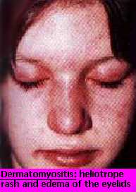
Classic juvenile DMT depends greatly on IC process. In these patients there is widespread vasculitis involving the skin, muscles, lungs and gastrointestinal tract. Deposits of IgG, IgM, and complement can be identified in the blood vessels suggesting immune complex-mediated tissue injury. In children, and in some acute involvements in adults, widespread necrotizing vasculitis may be present, involving the lungs, kidneys, heart, and other organs. This vasculitis is reminiscent of that encountered in polyarteritis. These acute lesions may lead to vascular fibrosis. Transitory arthritis may appear during the acute phases of the disease, but chronic synovitis is rare. Mechanisms of lung involvement are close to allergic alveolitis (see below).
Immunologically, various anti-nuclear Ig are found in 40-60% of cases. Most diagnostical is finding of anti-Jo-1 autoantibodies, directed towards histidil-t-RNA-synthetase, giving cytoplasmic staining in immunofluorescent test. Anti-Jo-1 is detectable in 20-40% of all cases and in less than 5% of other connective tissue autoimmunopathies. Diffuse interstitial fibrosis of the lung is frequency present in patients who have anti-Jo-1 antibodies. The autoantibodies inhibit the target enzyme’s activity. Another kind of anti-enzymatic autoantibody in DMT is Ig against proteinkinases.
Clinically DMT is characterized by symmetric muscle weakness, often accompanied by a skin rash. Overall, females are affected about twice as often as males.
The nature of the inciting antigen remains unknown. Microbial agents are the prime suspects, especially viruses of the Coxsackie B group. These viruses have been isolated from a few cases with polymyositis, and serologic findings suggest that the occurrence of dermatomyositis in children may well be linked to previous infection with Coxsackie virus. Further support for a viral association comes from the observed similarities between the amino acid sequence of some viral proteins and histidyl-tRNA-synthetase. The homology has been shown for some proteins of picornaviruses (e.g. that of encephalomyocarditis) – and Jo-1 antigen. Thus molecular mimicry, deceiving the T-helpers, may be in play. The association with MHC DR3 has been shown.
For unknown reason, a higher than normal frequency of visceral cancers is seen among patients with polymyositis-dermatomyositis, at least in women. Adults with dermatomyositis seem to be at greater risk than those with myositis alone. Visceral cancers (breast, ovary, lungs, and stomach) are present in 8 to 20% of cases.
One of the most highly spread autoimmune IC mediated diseases is rheumatoid arthritis (RA). It is especially common in North America, where 1% to 2% of population are affected. In Old World RA occurs much more rarely. It is believed that RA is relatively new disease. At least, medical texts prior to 1830ies do not contain any descriptions of similar syndromes.
In this disease IC, activating the complement, are deposited in vascular wall and in synovial membranes. Hence, non-suppurative chronic relapsing proliferative synovitis and vasculitis occur in RA patients. Gradually it causes the formation of pannus – highly vascularized inflammatory synovial folds on the articular cartilaginous surfaces. The pannus gets secondary mechanical damage and is eroded in relapsing inflammation, which results in fibrosis, calcification and permanent joint ankylosis.
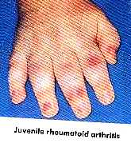
Clinically RA is characteristic for symmetric arthritis of small, initially – proximal joints. Extra-articular involvement may alter skin, heart, eyes, muscles, tendons, serosal membranes, lungs and more rarely – kidneys and peripheral nerves. Everywhere it is manifested in IC vasculitis and formation of rheumatoid nodules (a kind of granuloma with fibrinoid necrotic center and macrophagal infiltration, rimmed by granulation tissue).It is suggested that etiology of RA be related to incitement of autoallergic process by an exogenous factor in genetically predisposed individuals. Genetic background is associated with MHC DR4 and MHC DR1, both risky alleles sharing the same tetrapeptide portion. This alleles probably bind and/or present specifically some arthritogenic extrinsic antigen(s). The list of suspected candidates for trigger role include Proteus mirabilis, EBV, parvoviruses, mycoplasmas, mycobacteriae and even borreliae, still none have been agreed as main reason.
The typical immunopathological feature of RA is presence of so called rheumatoid factors (RF) in serum, synovial fluid and in deposited IC. 80% to 90% of RA patients produce them, but RF occur also in 5% of healthy persons and present in other non-RA kinds of IC mediated vasculitidis (SLE, chronic mycobacterioses, sarcoidosis). The RF are autoantibodies of IgG or IgM classes (rarely they belong to IgA and even IgE). The RF are directed against Fc-portions of self IgG. V. Agnello has demonstrated that RF can cross-react with native combination of core histones, having similarity to Fc-portion, thus producing nuclear type of immunofluorescent staining. Anti-histones autoimmunity is revealed in 40% of RA patients. According current hypothesis, RF can be elicited by autoantiidiotypic immune response towards Ig against certain bacterial Fc-binding proteins, so it is possible to regard RFs as kind of immunologic images for germ Fc-ligands. RFs circulate and actively take part in IC formation. The resulting ICs activate macrophages, polymorphonuclears, lymphocytes, synovium and endothelium. Consequently, a plenty of cytokines, mostly IL-1, TGFb , IL-6, TNFa - are produced in joints and around them. Through prostaglandins, acting as their intracellular messengers, the cytokines trigger inflammation, pannus production, proteolytic cartilage degradation and fibrosis. There is also systemic correlate of cytokine action (malaise, fever, weight loss).
Several specific forms of RA are known:
- Felti’s syndrome – a geriatric form of RA with high titers of RF, hypersplenism and IC mediated pancytopenia.
- Kaplan’s syndrome – an occupational RA of miners, combined with marked nodular pneumofibrosis, due to lung involvement. This form combines IC mediated vasculitis and Arthus-like interstitial alveolitis mechanism (see below).
- Juvenile RA, which is, in fact not an illness, but a constellation of similar ones. Pediatric RA is very different from adult one, for it has low titers of RF, is associated with MHC B27 allele, displays a variety of extra-articular symptoms (uveitis, leukocytosis, skin rash, lymphadenopathy, hepatosplenomegaly), and involves large joints, not always in symmetric manner.
In unusual acute feverish onset, this form of RA is traditionally called Still’s disease.
Sjegren’s syndrome (SjS; described by Henrich Sjegren in 1933 and distinct from another eponym: Torsten Sjegren’s syndrome, which is a cataract plus oligophrenia) is observed both as primary disease (sicca syndrome), and secondary one (superimposed over clinics of another autoimmunopathies, most typically rheumatoid arthritis or SLE). Sjorgen's syndrome has a core of clinicopathologic entity characterized by dry eyes (keratoconjunctivitis sicca) and dry mouth (xerostomia) resulting from immunologically mediated destruction of the lacrimal and salivary glands. Not rare are also xeroderma, itch, and involvement of mucus glands, causing vaginitis and naso-pharingo-laryngo-tracheobronchitis.
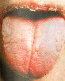
The decrease in tears and saliva (sicca syndrome) is the result of lymphocytic infiltration and fibrosis of the lacrimal and salivary glands. The infiltrate contains predominantly T cells and some B cells, including plasma cells that secrete antibody locally. Most of the infiltrating T cells are CD4+ and may serve as helper cells for antibody synthesis. Probably, the leading mechanisms of anti-gland autoallergy in SjS are of delayed type. The similarity to the mechanisms of Hashimoto’s thyroiditis (with which SjS may overlap) is obvious. But, it is not clear, however, whether the tissue damage is mediated exclusively by the few cytotoxic T cells that infiltrate the gland or by autoantibodies, several of which can be found in the serum.Anyway, in SjS there is systemic vasculitis, probably associated with IC and involvement of ITH. Vasculitis is thought to be responsible for skin involvement and extraglandular symptoms of disease, including interstitial nephritis or (rarely) glomerulonephritis, CNS and muscles affectation.
Sjegren's syndrome is associated with several autoantibodies, although the spectrum is not as broad as in SLE.
In SjS serological characteristics the most specific detail is presence of antibodies directed against ribonucleoprotein (ribosomal) antigens, which have been designated SS-A (Ro) and SS-B (La). The frequency of these autoantibodies varies widely, but it is generally accepted that with highly sensitive techniques both can be detected in up to 85-95% of the patients for SS-A and 70-90% - for SS-B. Both types of autoantibodies are not unique for SjS, being quite frequent finding also in SLE (25-60 and 10-35% correspondingly). So, anti-SS-B is considered more specific for Sjegren's syndrome. In other connective tissue autoimmune diseases they are uncommon (<5% of positive tests). It appears that patients with Sjorgen's syndrome who have high titers of antibodies to SS-A are more likely to have extraglandular manifestations, such as cutaneous vasculitis and central nervous system disease.
About 75% of patients have RF, irrespective of whether coexisting rheumatoid arthritis is present or not. Antinuclear autoantibodies are detected in 50 to 80% of patients, and a positive LE test is present in 25% A variety of autoantibodies to salivary duct cells, smooth muscle mitochondria, gastric parietal cells, and thyroid antigens may present in some cases of SjS.
Both serologic and immunogenetic studies suggest that patients with secondary Sjegren's syndrome make up a subset that is distinct from those with primary Sjegren's syndrome. The latter seem to show higher frequency of HLA-DR3, whereas patients with associated rheumatoid arthritis show a positive correlation with HLA-DR4.
As might be expected from the presence of autoantibodies, a variety of functional abnormalities have been detected in the T cells, B cells, and macrophages, many of which are similar to those described in SLE and need not be repeated. Although it seems logical to assume that autoimmunity is involved in the pathogenesis of Sjegren's syndrome, the triggering mechanisms are not clear. As in SLE, genetic predisposition, viruses, and deranged immunoregulation are believed to be involved, but their precise roles and interactions remain to be elucidated.
An important pediatric feature of this disorder is that in fetus, carried by a mother with SjS, transplacental penetration of autoantibodies may cause the congenital heart AV-block. Another clinically significant interplay is that between SjS and lymphomas. The lymph nodes of patients with Sjogren's syndrome show not only enlargement but also a pleoromorphic infiltrate of cells with frequent mitoses. The appearance has been described as "pseudolymphoma" because not all the criteria of malignant lymphoma are satisfied. However, clear-cut malignant lymphomas mostly of the B-cell type have developed in the salivary glands and lymph nodes in some 1% of patients, and it is believed that patients with Sjogren's syndrome have an approximately 40-fold higher risk of developing lymphoid malignancies. This has led to the statement that the disorder lies "somewhere between hyperplasia and neoplasia".
Mixed connective tissue disease (MCTD) is a term coined in 1972 to describe the disease seen in a group of patients who were identified clinically by the coexistence of features suggestive of SLE, inflammatory myopathy, and scleroderma, and serologically by high titers of antibodies to nuclear ribonucleoprotein (in 70% of cases). Two other factors have been considered important in lending distinctiveness to MCTD-the paucity of renal disease and an extremely good response to corticosteroids, both of which could be considered as indicative of a good long-term prognosis. The absence of antibodies to native DNA and Sm antigen (which characterize SLE) is important in defining MCTD.
MCTD may present with arthritis, swelling of the hands, Raynaud's phenomenon, abnormal esophageal motility, myositis, leukopenia and anemia, fever, lymphoadenophathy, and hypergammaglobulinemia. Although serologic overlap with SLE occurs, the unifying feature of MCTD is the speckled pattern of nuclei on immunofluorescence and the presence of antibodies against ribonucleoproteins in extremely high titers. Over the last 15 years, as more patients with clinical and serologic features consistent with the diagnosis of MCTD have been identified, a controversy has developed over whether MCTD constitutes a distinct disease or is a heterogeneous mixture of subsets of SLE, scleroderma, and polymyositis. According to this view, because overlapping of clinical features is not uncommon among autoimmune diseases, MCTD cannot be considered a distinct clinicopathologic entity; furthermore, many patients with an initial diagnosis of MCTD later develop features most consistent with systemic sclerosis.
NEXT CHAPTER OR